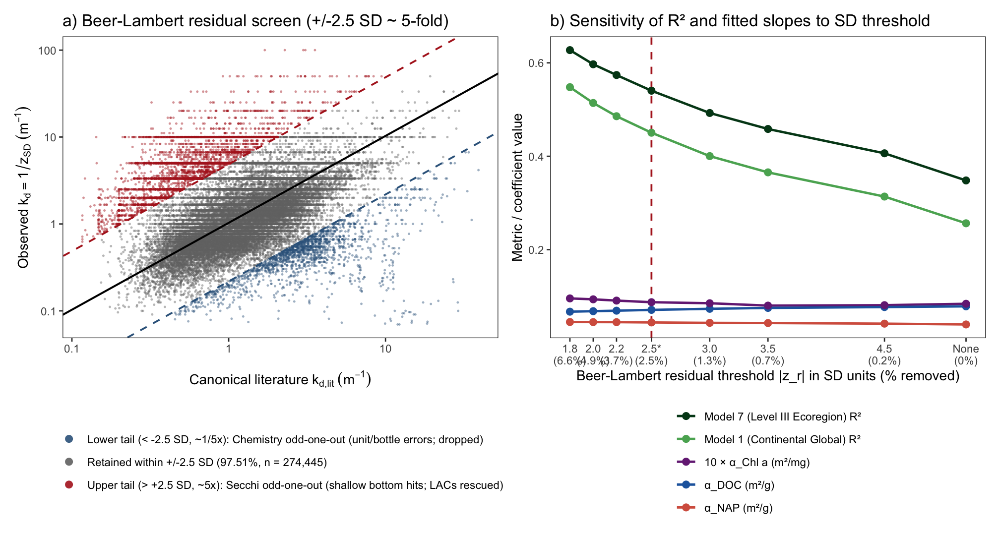
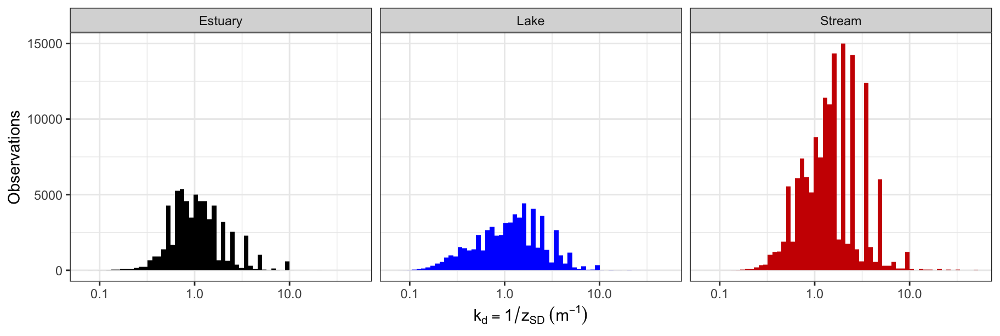

Section 4 Analytical Floors & Beer–Lambert Plausibility Screening
Even after parameter and unit harmonization, roughly 1–2% of multi-agency WQP records contain field-recording anomalies that can heavily leverage ordinary least squares (OLS) slopes. However, simple marginal quantile trimming (clipping the top and bottom 0.1% or 1% of each variable independently) throws away genuine oligotrophic alpine lakes (Secchi up to 13.96 m) and real storm-flow sediment plumes (TSS up to 978 mg/L) while missing joint physical contradictions in the middle of the distribution.
To clean recording errors without truncating real extremes or introducing statistical circularity, R/prep.R uses a two-stage protocol (n = 277,382):
4.1 Stage 1: Analytical Reporting Floors (trim_simultaneous())
Rather than dropping low-concentration tails, entries reported below standard EPA/USGS Method Detection Limits (MDLs) are floored via ifelse(x < floor, floor, x) (chl_a = 0.10 µg/L, doc = 0.25 mg/L, tss = 0.50 mg/L, secchi = 0.01 m), retaining 100% of the 281,439 simultaneous 4-variable matchups:
| Variable | Analytical Floor (MDL) | Median | 99.9th Percentile | Maximum Retained |
|---|---|---|---|---|
| Chlorophyll a (µg/L) | 0.10 | 7.33 | 323.000 | 990.290 |
| Dissolved Organic Carbon (mg/L) | 0.25 | 6.20 | 48.000 | 49.985 |
| Total Suspended Solids / SSC (mg/L) | 0.50 | 8.50 | 340.000 | 978.000 |
| Secchi Disk Depth (m) | 0.01 | 0.80 | 7.687 | 14.330 |
4.2 Stage 2: A Priori Beer–Lambert Plausibility Screen (clean_wqp_discordance())
What kinds of errors survive marginal inspection? Two classic WQP artifacts stand out in Figure 4.1a:
- Unflagged streambed bottom hits (
3,157records,1.12%): Field crews lower a Secchi disk in a crystal-clear, shallow stream (\(0.05\text{–}0.20\text{ m}\) deep) where the disk hits the gravel bed while still clearly visible, and record the water depth (Secchi = 0.05–0.20 m, implying \(k_d = 5\text{–}20\text{ m}^{-1}\)) without flagging a bottom hit—even though paired bottle chemistry shows ultra-clear water (\(\text{TSS} < 3\text{ mg L}^{-1}\), \(\text{DOC} < 3\text{ mg L}^{-1}\)). - Unit and bottle mismatches (
900records,0.32%): Records reporting clear water (Secchi = 3–10 m) alongside extreme sediment or carbon (\(\text{TSS} > 100\text{ mg L}^{-1}\)), caused by Secchi depth entered in feet rather than meters or storm-flow sediment samples matched to baseflow clarity readings.
To screen out these physically contradictory combinations without using our fitted regression models, we compare measured diffuse attenuation (\(k_d = 1 / z_{SD}\)) against a priori Beer–Lambert attenuation (\(k_{d,\text{lit}}\)) calculated strictly from published optical cross-sections (Kirk 1994; Morris et al. 1995; Bannister 1974; Gohin et al. 2005):
\[k_{d,\text{lit}} = 0.080 + 0.040\,\max(0, \text{NAP}) + 0.070\,\text{DOC} + 0.016\,\text{Chl }a\]
Matchups where observed \(k_d\) and literature \(k_{d,\text{lit}}\) diverge by more than a factor of \(10^{0.80} \approx 6.3\times\) (\(|\log_{10}(k_d / k_{d,\text{lit}})| > 0.80\)) are removed (4,057 rows = 1.44%), leaving 277,382 physically consistent training matchups:

Figure 4.1: (a) Observed diffuse attenuation (kd = 1/z_SD) vs. a priori Beer–Lambert expectation (kd,lit) across all 281,439 matchups, highlighting shallow streambed bottom hits (red horizontal bands at Secchi = 0.05–0.20 m) and unit/bottle mismatches (blue). (b) Model R² and global slope stability across plausibility thresholds τ.
Because this screen acts only on the ratio \(k_d / k_{d,\text{lit}}\), 100% of true environmental extremes (Secchi up to 13.96 m, TSS up to 978 mg/L, Chl a up to 990 µg/L) pass intact:
| Dataset | n | Secchi (m) [Min / Med / Max] | TSS (mg/L) [Min / Med / Max] | DOC (mg/L) [Min / Med / Max] | Chl a (µg/L) [Min / Med / Max] |
|---|---|---|---|---|---|
| Before plausibility screen (Stage 1 analytical floors only) | 281,439 | 0.01 / 0.80 / 14.33 | 0.50 / 8.5 / 978.0 | 0.25 / 6.20 / 50.0 | 0.10 / 7.33 / 990.3 |
| After plausibility screen (Stage 2 final training set) | 277,382 | 0.02 / 0.80 / 13.96 | 0.50 / 8.6 / 978.0 | 0.25 / 6.23 / 50.0 | 0.10 / 7.48 / 990.3 |
4.3 Pure-Water Attenuation Offset (\(k_w\)) and \(k_d\) Distributions
Following Lee et al. (2015, 2018) and Kirk (1994), we set diffuse attenuation to \(k_d = 1 / z_{SD}\) and define baseline pure-water attenuation (\(k_w\)) from the clearest water in the training set (\(\max(z_{SD}) = 13.96\text{ m}\)):
\[k_w = \frac{1}{1.5 \times \max(z_{SD})} = \frac{1}{1.5 \times 13.96\text{ m}} = 0.04776\ \text{m}^{-1}\]
This value of \(k_w\) is used consistently across both model fitting and Secchi depth prediction (\(\hat{z}_{SD} = 1 / [\hat{k}_{d,\text{non-water}} + k_w]\)).

Figure 4.2: Distribution of diffuse light attenuation (kd = 1 / z_SD) across estuaries, lakes, and streams in the final training dataset (n = 277,382).